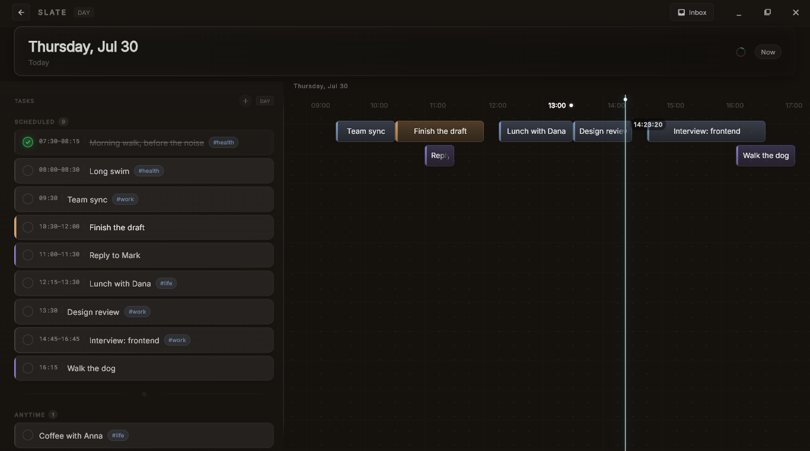

A day planner for Windows
Catch the thought before it's gone.
Press a hotkey anywhere in Windows, type what you're thinking, and it lands on your day at the right hour. The app window never has to open.
I built it because I kept dumping plans into Telegram saved messages and never seeing them again.
Free · Windows 10 and 11 · about 14 MB · no account

One day, laid out along its hours. Tasks sit where their time is, not in a list you have to read top to bottom.
You type a sentence. It works out the rest.
No date picker, no time field, no choosing a list. The bar tells you where the task will land before you press Enter.
The planners I liked all lived in someone else's cloud.
I wanted one fast, private place for my day that I actually own. I couldn't find it on Windows, so I made it.
It stays on your disk
Your tasks sit in an encrypted file on your own computer, fully offline. No server holds them, so no server can read them, lose them, or sell them. Not even me.
Fast because it's native
Built in Rust and Flutter, not a web page wrapped in a browser. The hotkey answers instantly, and the timeline stays smooth with a full day on it.
Yours, not rented
No monthly fee to look at your own calendar, and no AI quietly rearranging your day. You place time with your hands.
Three seconds, no forms.
Catching a plan should be as fast as having the thought.
Capture
Press Alt + Space from anywhere, even on top of other apps. A small bar appears, waiting.
Parse
Type gym tomorrow at 6pm. It reads the date and time out of your own words and shows you where the task will go, before you commit.
Land
It drops onto your day at the right hour. Drag it, tick it off, and get back to what you were doing.
What it doesn't do, on purpose.
I would rather you know now than feel misled after installing.
- No cloud sync. Your data stays put. That's the whole idea, not a missing feature.
- No AI running your schedule. It won't plan the day for you.
- No phone app. Desktop first, and Windows only for now.
- Still early. The month view is rough and you will find bugs. Tell me about them.
It's just me.
No company, no team, no investors. One person building this under the name Kael. Which also means that when you write, you get me, not a support queue.
If something breaks, if you have an idea, or if you try it for a day and decide it's useless, tell me. I read everything and usually answer the same day.
hello.slate@proton.me— Kael